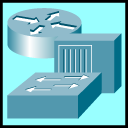
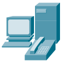
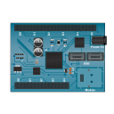
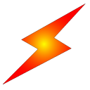

Cisco Packet Tracer
—
□
✕
F
ile
E
dit
O
ptions
V
iew
T
ools
E
xtensions
W
indow
H
elp
Cargar Red Cisco (Router 2911 + 2 Subredes)
Logical
Physical
x: 0, y: 0
Root Workplace
Time:
00:00:00
Realtime
Simulation




Routers
▶
i
Scenario 0
New
Delete
Toggle PDU List Window
Fire
Last Status
Source
Destination
Type
Color
Time(sec)
Periodic
Num
Edit
Delete
Puertos Disponibles:
Router0 (2911)
×